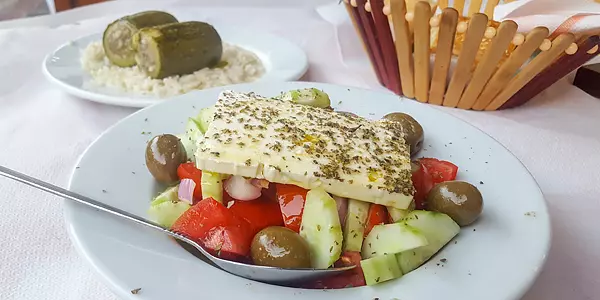
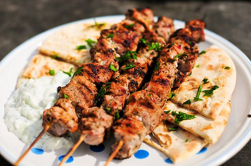
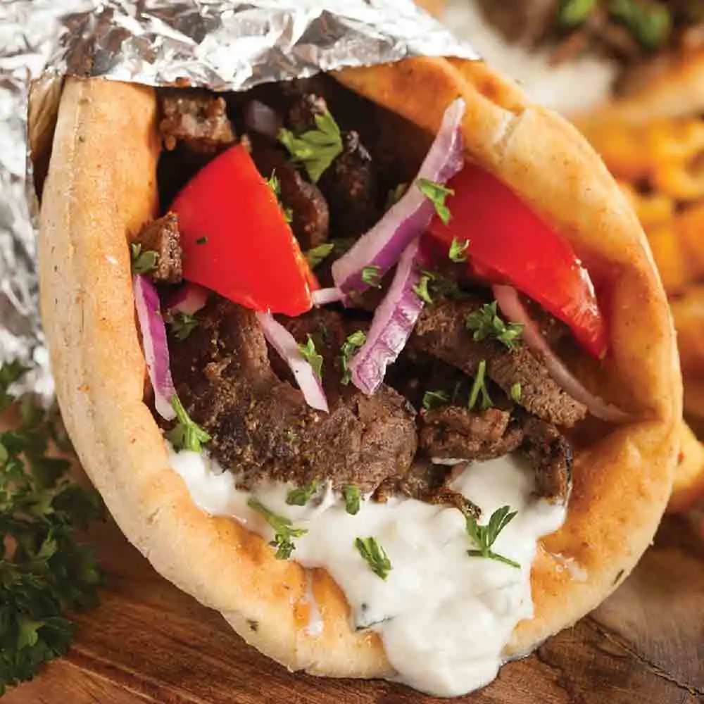

Sabores da Grécia
Pratos como moussaka, souvlaki e salada grega são apenas algumas das delícias da culinária local.

Salada Grega
A culinária grega é famosa pelo uso de azeite, ervas frescas e vegetais.
Moussaka
Prato típico feito com carne moída, berinjela e molho bechamel.

Souvlaki
Carne grelhada no espeto servida com pão pita e molho.

Gyros
Carne assada servida em pão pita com verduras e molho tzatziki.